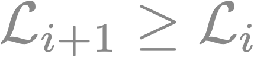

A Bayesian model selection framework to probe the structure of Langmuir-Blodgett monolayers from neutron reflectometry
SciML Seminar — 2019/10/17
DOI:
10.6084/m9.figshare.9994850
Andrew R. McCluskey,
a,b
Jos F. K. Cooper
c
, & Tim Snow,
a,d
a. Diamond Light Source; b. University of Bath;
c. ISIS Neutron and Muon Source; d. University of Bristol
andrew.mccluskey@diamond.ac.uk
an_drewmcc
(he/him)
armccluskey.com/talks/sciml2019
andrew.mccluskey@diamond.ac.uk
let's break that title down
A
Bayesian model selection
framework to probe the structure
of
Langmuir-Blodgett monolayers
from
neutron reflectometry
andrew.mccluskey@diamond.ac.uk
Langmuir-Blodgett monolayers
andrew.mccluskey@diamond.ac.uk
Langmuir/Blodgett
Irving Langmuir
Katharine Blodgett
andrew.mccluskey@diamond.ac.uk
amphiphiles
andrew.mccluskey@diamond.ac.uk
important biologically and technologically
lipids: make up cell membranes
surfactants: present in many consumer products
Liley,
et al.
, Langmuir,
33
, 4301 (2017);
Fisher,
et al.
, in
Neutron Scattering - Applications in Biology, Chemistry, and Materials Science
(Academic Press, 2017) pp. 1-75
andrew.mccluskey@diamond.ac.uk
self-assemble
andrew.mccluskey@diamond.ac.uk
structure is important
andrew.mccluskey@diamond.ac.uk
neutron reflectometry
andrew.mccluskey@diamond.ac.uk
neutron reflectometry
Non-invasive measurement of structure at an interface
Application to Langmuir-Blodgett monolayers only developed in the past thirty years
Popularised through the work of Penfold, Thomas and others
Grundy,
et al.
, Thin Solid Films,
159
, 43 (1988);
Penfold and Thomas, J. Phys. Condens. Matter,
2
, 1369 (1990);
Penfold and Thomas, Curr. Opin. Colloid Interface Sci.,
19
, 198 (2014)
andrew.mccluskey@diamond.ac.uk
andrew.mccluskey@diamond.ac.uk
andrew.mccluskey@diamond.ac.uk
andrew.mccluskey@diamond.ac.uk
Campbell,
et al.
, J. Colloid Interface Sci.,
531
, 98 (2018)
andrew.mccluskey@diamond.ac.uk
Bayesian model selection
❤️ Thomas Ba(e)yes ❤️
English statistician; 1701-1761
andrew.mccluskey@diamond.ac.uk
Bayes theorem
Bayes, Phil. Trans. Roy. Soc.,
53
, 370 (1763)
andrew.mccluskey@diamond.ac.uk
model comparison
Pullen and Morris, PLOS ONE
9
, e88419 (2014)
andrew.mccluskey@diamond.ac.uk
parity between the hypotheses
andrew.mccluskey@diamond.ac.uk
possibly multi-dimensional
üñ•Ô∏èüíµüñ•Ô∏èüíµüñ•Ô∏èüíµüñ•Ô∏èüíµüñ•Ô∏èüíµüñ•Ô∏è
Sivia and Skilling,
Data Analysis: A Bayesian Tutorial
, Oxford University Press, Oxford (2006)
andrew.mccluskey@diamond.ac.uk
Dynamic nested sampling using dynesty
Higson
et al.
, arXiv: 1704.03459
;
Speagle, arXiv: 1904.02180
andrew.mccluskey@diamond.ac.uk
nested sampling
Draw
K
"live points" from the prior
Get natural logarithm of likelihood at each live point
Kill the live point with the lowest likelihood
Draw new live point from prior subject to the constraint

Continue until stopping criteria is reached
andrew.mccluskey@diamond.ac.uk
evidence evaluation
andrew.mccluskey@diamond.ac.uk
dynamic nested sampling
The number of live points is dynamically allocated
This allows the algorithm to adapt to the shape of the evidence distribution in real time
Leading to improved accuracy and efficiency
andrew.mccluskey@diamond.ac.uk
Bayes' factor
Sivia
et al.
, Physica D,
66
, 234 (1993)
andrew.mccluskey@diamond.ac.uk
Bayesian model comparison
This offers a clear, robust, and scalable method for comparison of reflectometry models
The evidence is
data-dependent
, so can compare different data quantities
Not the first to apply Bayesian model comparison to neutron reflectometry
Sivia
et al.
, Physica B,
173
, 121 (1991)
;
Geoghagen
et al.
, Thin Solid Films,
53
, 825 (1996)
;
Sivia and Webster, Physica B,
248
, 327 (1998)
andrew.mccluskey@diamond.ac.uk
what did we do?
Apply this Bayesian method to the three Campbell models
Investigate the effect of different isotopic contrasts
Show (mathematically) what everyone already knew
andrew.mccluskey@diamond.ac.uk
andrew.mccluskey@diamond.ac.uk
Agrees well with the Campbell
et al.
result
andrew.mccluskey@diamond.ac.uk
but getting seven contrasts of neutron data isn't easy
usually expensive and synthetically difficult
most of the time only a few contrasts are used
andrew.mccluskey@diamond.ac.uk
the most common contrasts
tail-deuterated with D
2
O and ACMW and fully-hydrogenated with D
2
O
Pabois
et al.
, J. Colloid Interface Sci.,
556
, 266 (2019)
;
Ortiz-Collazos
et al.
, BBA - Biomembranes,
1861
, 182994 (2019)
andrew.mccluskey@diamond.ac.uk
Fewer contrasts, less relative evidence
andrew.mccluskey@diamond.ac.uk
is there a combination where model 3 doesn't have the most evidence?
andrew.mccluskey@diamond.ac.uk
Fully-deuterated molecules on D
2
O and ACMW and fully hydrogenated molecules on D
2
O
andrew.mccluskey@diamond.ac.uk
consider the evidence for different models
If an experimentalist wants to use a model of lesser evidence, important to accept that this is based on a qualitative understanding of the system
andrew.mccluskey@diamond.ac.uk
conclusions
Statistically rigorous method for the comparison of relative model evidence
Known knowledge
is usually true
Fewer contrasts, less confidence
Lots of nice work on this possible in the future
andrew.mccluskey@diamond.ac.uk
acknowledgements
David Barlow (Kings' College London)
Jayne Lawrence (University of Manchester)
Simon Titmuss (University of Edinburgh)
Tom Arnold (ESS)
funding
andrew.mccluskey@diamond.ac.uk
thanks for listening
Penny and Sadie, good dogs